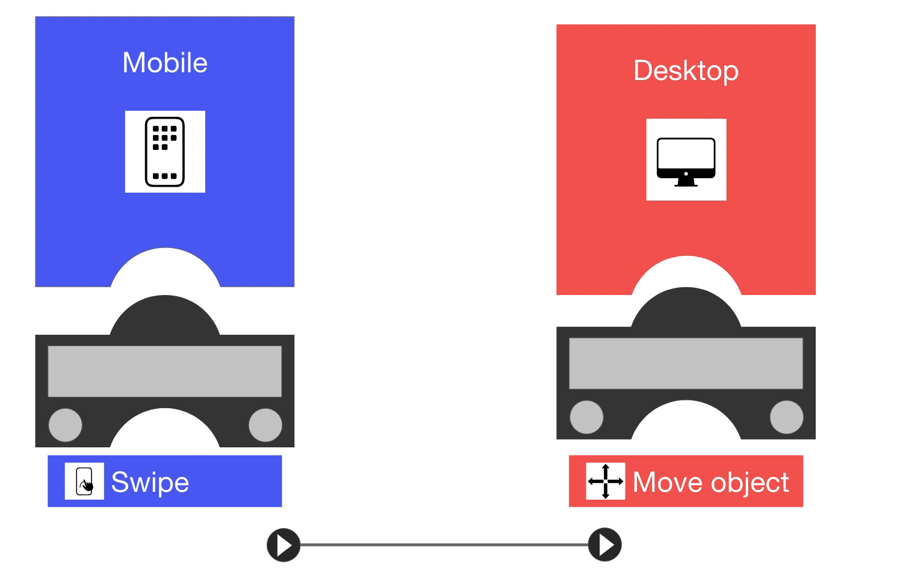

Tangible Experience Design Toolkit
Background
Today we are surrounded by more devices than ever before. An average person may be surrounded by a large variety of network capable devices: computers; smartphones; tablets; wall mounted displays and even pocket sized embedded systems like Arduino and RaspberryPi. With this rise in the number of device ecologies, interaction designers have been moving towards creating more immersive and interactive experiences using these devices. However, as interaction design becomes more focused on experiential multi-device environments it gets harder to develop and design these complex experiences especially for designers who do not have expertise in developing cross device interactions. While there are existing resources for the designing cross-device interactions, they are usually geared towards experts rather than novices.
Block based languages in introductory programming education can help students focus on high level algorithm creation and improve the understanding of text-based programming languages. With the growing popularity of new visual block-based programming languages, developing applications has become more accessible and easier. Tangible user interfaces allow users to interact with physical objects, surfaces and spaces to manipulate digital information. These objects provide a tangible representation that makes the information directly manipulable while also providing haptic feedback.These tangible tools are often used as teaching aids in schools but they lack the robustness to be used as design tools.
Research Questions
These observations provide an interesting avenue for a tangible toolkit that can be used to design complete cross-device experiences. This project asks two major questions:
- Can tangibles be used to design a scalable toolkit to support development of complex experiences that use numerous devices and custom interactions?
- Can the toolkit be used to improve the understanding of the development process for cross-device interactions?
The Tangible Experience Design toolkit
Design flow of the tangible toolkit
This project provides a scalable design framework to guide novice experience designers from building their first cross device interaction to potentially defining their own novel interactions between multiple devices. The toolkit uses tangible user interfaces to improve the learnability for the users while also providing an analog feedback loop for connections and data flows between networked devices. There are four key tangible components of the toolkit - Device blocks, Interaction Containers, Interaction cards, Connections that can be used to build a visual framework for the interactions between the devices. The initial version of the toolkit supports three devices; Desktop, Mobile, Arduino with two interactions per device
Key features:

First set of tangibles supported by the toolkit
The toolkit uses design elements from everyday objects and integrates them into a modular tangible system in an effort to provide a conceptual representation of connected devices.
- Actions are housed in cards and can be combined with devices to act as inputs or outputs (or BOTH!)
- Devices and their Actions are grouped closely and are connected using a puzzle-like interface.
Adding an action to a device
- Each Action can be linked to an external device Action using connection interfaces.
Connecting two actions to create an interaction
- The tangible toolkit is supported by a software based application to modify details of the the cross device interactions.
- The modularity of the toolkit allows users to create their own interactions as they get comfortable with developing cross device interactions
User Study:
The toolkit was tested with a small group of potential users as a part of an informal pilot study. The results from the study showed that the design of the toolkit was promising and helped improve the understanding of cross-device interaction design for novice users. Some of the responses from the participants were “Having the puzzle shape really helped to idealize out where they[interaction containers] go,” “Tangible things help me process things a lot better,” “The fact that it was a literal puzzle made it really easy to understand what was necessary to create interactions”.
Conclusion
Although the toolkit is still a work in progress, this project highlights that using Tangible User Interfaces could be a potential avenue for improving the understanding of cross-device interaction design among inexperienced users. The toolkit design helped designers better understand the connections behind cross-device interactions while still allowing them to focus on the high-level experience design.